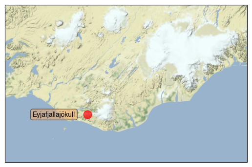
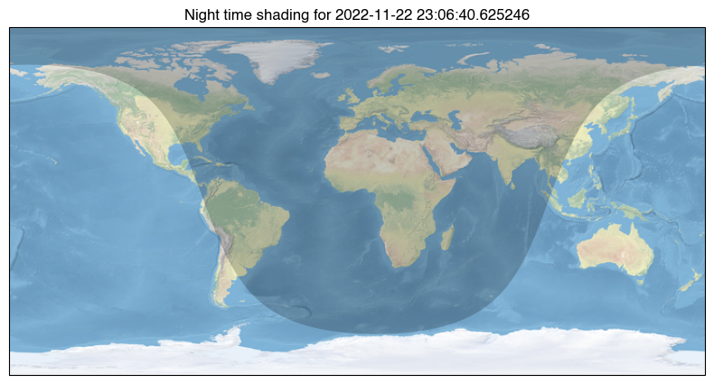

[48]:
from datetime import datetime
from io import StringIO
from urllib.request import urlopen
import numpy as np
import cartopy.crs as ccrs
from cartopy.feature.nightshade import Nightshade
import matplotlib.pyplot as plt
from matplotlib.colors import LinearSegmentedColormap
def aurora_forecast():
"""
Get the latest Aurora Forecast from https://www.swpc.noaa.gov.
Returns
-------
img : numpy array
The pixels of the image in a numpy array.
img_proj : cartopy CRS
The rectangular coordinate system of the image.
img_extent : tuple of floats
The extent of the image ``(x0, y0, x1, y1)`` referenced in
the ``img_proj`` coordinate system.
origin : str
The origin of the image to be passed through to matplotlib's imshow.
dt : datetime
Time of forecast validity.
"""
# GitHub gist to download the example data from
url = ('https://gist.githubusercontent.com/belteshassar/'
'c7ea9e02a3e3934a9ddc/raw/aurora-nowcast-map.txt')
# To plot the current forecast instead, uncomment the following line
#url = 'https://services.swpc.noaa.gov/text/aurora-nowcast-hemi-power.txt'
response_text = StringIO(urlopen(url).read().decode('utf-8'))
img = np.loadtxt(response_text)
# Read forecast date and time
response_text.seek(0)
for line in response_text:
if line.startswith('Product Valid At:', 2):
dt = datetime.strptime(line[-17:-1], '%Y-%m-%d %H:%M')
img_proj = ccrs.PlateCarree()
img_extent = (-180, 180, -90, 90)
return img, img_proj, img_extent, 'lower', dt
def aurora_cmap():
"""Return a colormap with aurora like colors"""
stops = {'red': [(0.00, 0.1725, 0.1725),
(0.50, 0.1725, 0.1725),
(1.00, 0.8353, 0.8353)],
'green': [(0.00, 0.9294, 0.9294),
(0.50, 0.9294, 0.9294),
(1.00, 0.8235, 0.8235)],
'blue': [(0.00, 0.3843, 0.3843),
(0.50, 0.3843, 0.3843),
(1.00, 0.6549, 0.6549)],
'alpha': [(0.00, 0.0, 0.0),
(0.50, 1.0, 1.0),
(1.00, 1.0, 1.0)]}
return LinearSegmentedColormap('aurora', stops)
def main():
fig = plt.figure(figsize=[10, 5])
# We choose to plot in an Orthographic projection as it looks natural
# and the distortion is relatively small around the poles where
# the aurora is most likely.
# ax1 for Northern Hemisphere
ax1 = fig.add_subplot(1, 2, 1, projection=ccrs.Orthographic(0, 90))
# ax2 for Southern Hemisphere
ax2 = fig.add_subplot(1, 2, 2, projection=ccrs.Orthographic(180, -90))
img, crs, extent, origin, dt = aurora_forecast()
for ax in [ax1, ax2]:
ax.coastlines(zorder=3)
ax.stock_img()
ax.gridlines()
ax.add_feature(Nightshade(dt))
ax.imshow(img, vmin=0, vmax=100, transform=crs,
extent=extent, origin=origin, zorder=2,
cmap=aurora_cmap())
plt.show()
if __name__ == '__main__':
main()

[14]:
response_text = StringIO(urlopen(url).read().decode('utf-8'))
#img = np.loadtxt(response_text)
[45]:
import matplotlib.pyplot as plt
import geopandas
from cartopy import crs as ccrs
path = geopandas.datasets.get_path("naturalearth_lowres")
df = geopandas.read_file(path)
# Add a column we'll use later
df["gdp_pp"] = df["gdp_md_est"] / df["pop_est"]
---------------------------------------------------------------------------
ModuleNotFoundError Traceback (most recent call last)
/var/folders/c9/7yddvl1n2ss863cgfngj0wpm0000gp/T/ipykernel_33191/1569234713.py in <module>
1 import matplotlib.pyplot as plt
----> 2 import geopandas
3 from cartopy import crs as ccrs
4
5 path = geopandas.datasets.get_path("naturalearth_lowres")
ModuleNotFoundError: No module named 'geopandas'
[43]:
import matplotlib.pyplot as plt
from matplotlib.transforms import offset_copy
import cartopy.crs as ccrs
import cartopy.io.img_tiles as cimgt
def main():
# Create a Stamen terrain background instance.
stamen_terrain = cimgt.Stamen('terrain-background')
fig = plt.figure()
# Create a GeoAxes in the tile's projection.
ax = fig.add_subplot(1, 1, 1, projection=stamen_terrain.crs)
# Limit the extent of the map to a small longitude/latitude range.
ax.set_extent([-22, -15, 63, 65], crs=ccrs.Geodetic())
# Add the Stamen data at zoom level 8.
ax.add_image(stamen_terrain, 8)
# Add a marker for the Eyjafjallajökull volcano.
ax.plot(-19.613333, 63.62, marker='o', color='red', markersize=12,
alpha=0.7, transform=ccrs.Geodetic())
# Use the cartopy interface to create a matplotlib transform object
# for the Geodetic coordinate system. We will use this along with
# matplotlib's offset_copy function to define a coordinate system which
# translates the text by 25 pixels to the left.
geodetic_transform = ccrs.Geodetic()._as_mpl_transform(ax)
text_transform = offset_copy(geodetic_transform, units='dots', x=-25)
# Add text 25 pixels to the left of the volcano.
ax.text(-19.613333, 63.62, 'Eyjafjallajökull',
verticalalignment='center', horizontalalignment='right',
transform=text_transform,
bbox=dict(facecolor='sandybrown', alpha=0.5, boxstyle='round'))
plt.show()
if __name__ == '__main__':
main()

[44]:
import datetime
import matplotlib.pyplot as plt
import cartopy.crs as ccrs
from cartopy.feature.nightshade import Nightshade
fig = plt.figure(figsize=(10, 5))
ax = fig.add_subplot(1, 1, 1, projection=ccrs.PlateCarree())
date = datetime.datetime.now()
ax.set_title(f'Night time shading for {date}')
ax.stock_img()
ax.add_feature(Nightshade(date, alpha=0.2))
plt.show()

[30]:
ccrs.PlateCarree?
Init signature: ccrs.PlateCarree(central_longitude=0.0, globe=None)
Docstring:
The abstract class which denotes cylindrical projections where we
want to allow x values to wrap around.
Init docstring:
Parameters
----------
proj4_params: iterable of key-value pairs
The proj4 parameters required to define the
desired CRS. The parameters should not describe
the desired elliptic model, instead create an
appropriate Globe instance. The ``proj4_params``
parameters will override any parameters that the
Globe defines.
globe: :class:`~cartopy.crs.Globe` instance, optional
If omitted, the default Globe instance will be created.
See :class:`~cartopy.crs.Globe` for details.
File: ~/opt/anaconda3/envs/py3/lib/python3.9/site-packages/cartopy/crs.py
Type: ABCMeta
Subclasses:
[32]:
ax.set_extent?
Signature: ax.set_extent(extents, crs=None)
Docstring:
Set the extent (x0, x1, y0, y1) of the map in the given
coordinate system.
If no crs is given, the extents' coordinate system will be assumed
to be the Geodetic version of this axes' projection.
Parameters
----------
extents
Tuple of floats representing the required extent (x0, x1, y0, y1).
File: ~/opt/anaconda3/envs/py3/lib/python3.9/site-packages/cartopy/mpl/geoaxes.py
Type: method
[ ]: